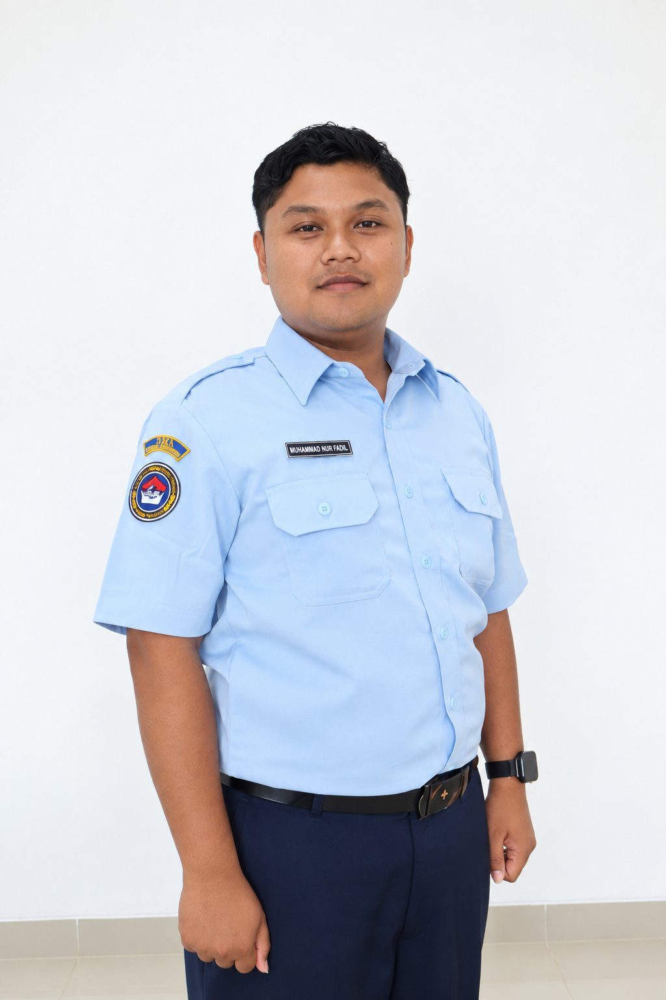

Saat ini
Pamong Administrasi
Staff Infolahta · Bagian Data, Sistem dan Aplikasi
AI Solutions Specialist
Halo, saya
AI Solutions Specialist · Digitalisasi proses & solusi berbasis AI
Saya merancang solusi digital yang menjawab kebutuhan nyata—berbekal latar belakang Teknik Informatika, pengalaman memahami proses operasional, dan proyek sistem informasi. Saya tertarik menerapkan AI untuk membuat alur kerja lebih efektif.

A little about me
Mengenal saya lebih dekat dan hal-hal yang saya sukai.
Nama saya Muhammad Nur Fadila, fresh graduate program studi Teknik Informatika di Universitas Islam Raden Rahmat Malang dengan IPK 3,8. Saya memiliki pengalaman di bidang administrasi perusahaan dan sekolah, termasuk pengelolaan data serta pengurusan legalitas tingkat kota dan kabupaten.
Saya aktif berorganisasi dan membuat komunitas studi pasar modal di Malang yang berfokus pada saham IPO dengan nama FreshStock. Pengalaman saya juga mencakup administrasi, pengelolaan keuangan, dan pengembangan software.
Kekuatan & keterampilan
Keterampilan yang tercantum dalam CV saya.
Selected work
Beberapa hal yang pernah saya bangun dan pelajari.
Pengalaman profesional
Perjalanan kerja, pendidikan, dan kontribusi organisasi saya.
Saat ini
Staff Infolahta · Bagian Data, Sistem dan Aplikasi
April 2023 — Desember 2025
CV Anugerah Nusantara Sakti · Malang
Mengoperasikan website OSS, merekap data pegawai, dan membantu pengurusan legalitas perusahaan.
September 2023 — Desember 2023
Shackfood · Malang
Mengatur keuangan, termasuk laporan pemasukan dan pengeluaran serta pembagian hasil.
September 2021 — Mei 2022
MTs Babussalam · Malang
Mengelola data EMIS dan Dapodik, merancang jadwal pembelajaran, serta merekap absensi guru dan siswa.
Lulus 2026
Sains dan Teknologi · Teknik Informatika
IPK 3,82018 — 2021
Ilmu Pengetahuan Alam
Nilai 862024
Kewirausahaan
Nilai AMei 2025 — Sekarang
Kelompok Studi Pasar Modal FreshStock · Malang
Mendirikan dan memimpin komunitas studi pasar modal yang berfokus pada pencarian return tinggi di saham IPO.
September 2023 — September 2024
Himpunan Mahasiswa Prodi Teknik Informatika
Mei 2022 — Mei 2024
UKM Badminton
Juli 2021 — Mei 2023
Pengurus Pondok Pesantren Babussalam
Juni 2019 — Mei 2020
Organisasi Siswa Intra Sekolah
Juara 1 Musabaqah Qira’atil Kutub Aqidatul Awam tingkat Kabupaten Malang.
Wisudawan terbaik ke-2 MTs Babussalam.
Peserta Olimpiade Sains Kabupaten bidang Fisika.
Menjadi divisi jurnalistik selama KKN dan menyelesaikan proyek artikel.
Hubungi saya
Saya berdomisili di Malang. Silakan hubungi saya melalui email, telepon, LinkedIn, atau GitHub.
Kirim email